Mivel nem RDBMS (Relational Database Management System) nyelv, ezért nincsenek táblák, oszlopok (mező - field),
sorok (rekordok).
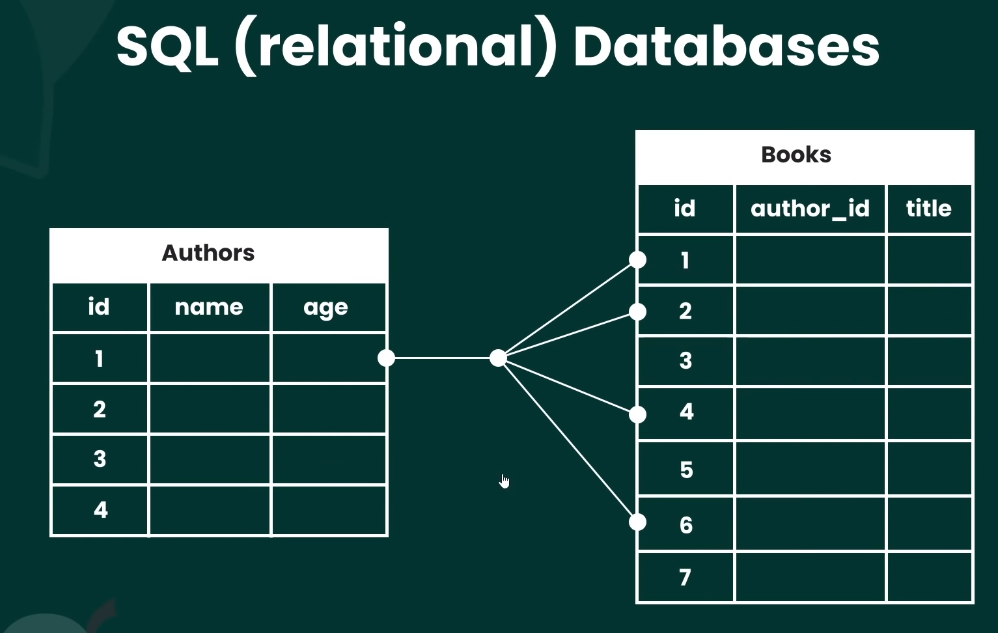
Nincsen join-tolás sem.
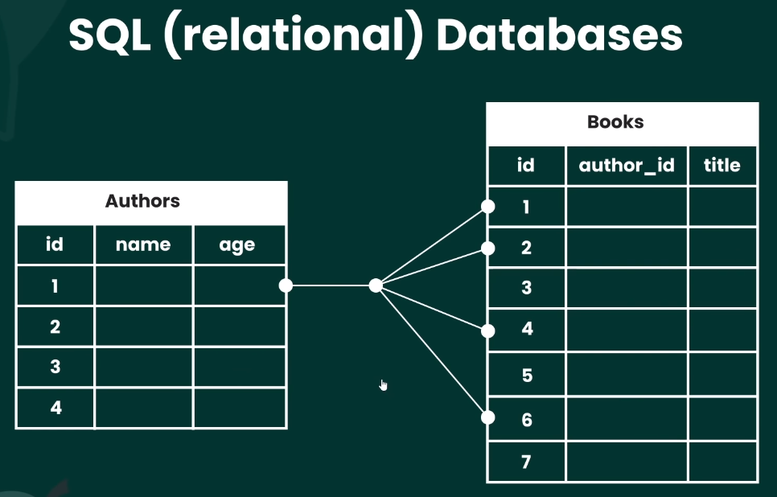
És nincsenek SQL lekérdezések.
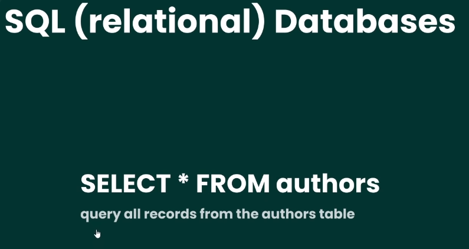
Viszont vannak gyűjtemények (collection) és dokumentumok (document).
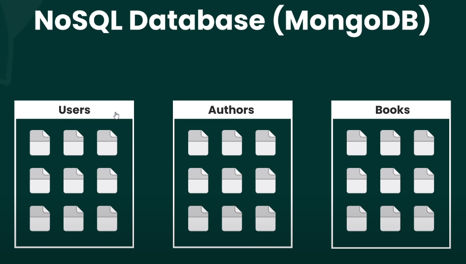
A dokumentumok javascript, JSON szerű BSON (Binary JSON) objektumokból állnak. Ezek egymásba is ágyazhatóak.
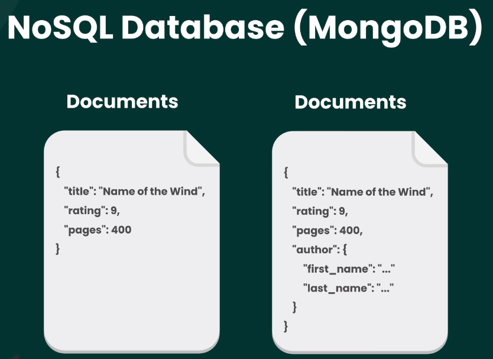
Letöltések, telepítések:
Ha a MongoDb-t a saját gépünkön szeretnénk használni, akkor
fel kell rá telepíteni. Ehhez töltsük le a
Community Server legutolsó
verzióját.
Community Server
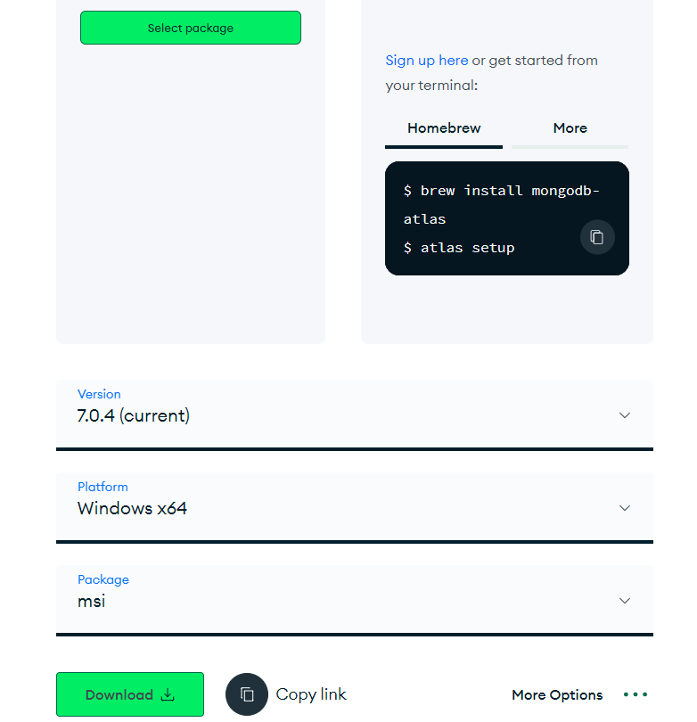
A szerződés elfogadása után a következő három ablakot
jelöljük be. Azután telepíthetünk.
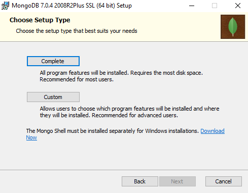
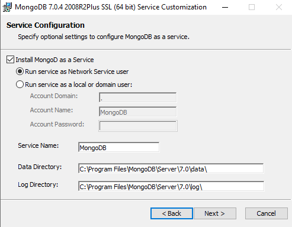
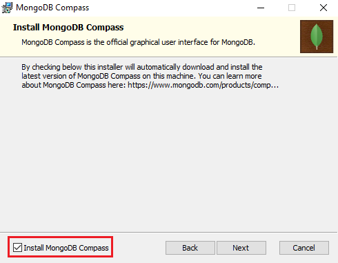
Ennek működtetésre két lehetőségünk van. Feltelepítjük külön
a Mongo Shell parancssori ablakot.
Mongo Shell
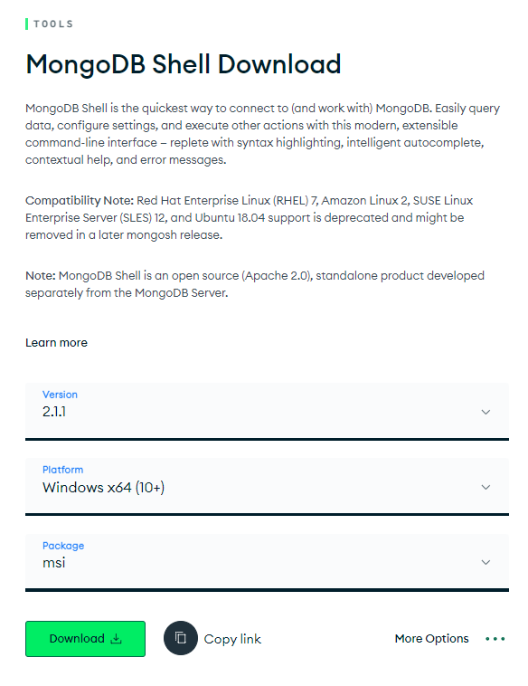
Itt csak egy dolgot kell elfogadni. Ki használhatja a
Shell-t.
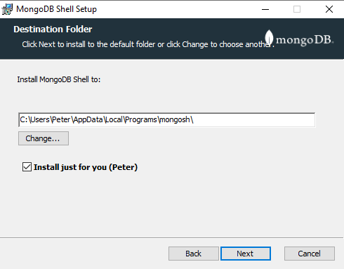
Vagy ha a Visual Studio Code-ot használjuk, akkor a
következő Extension-t telepítsük.
Az Extensions fülön lévő
MongoDb levél logóra kattintva
indíthatjuk el az alkalmazást.
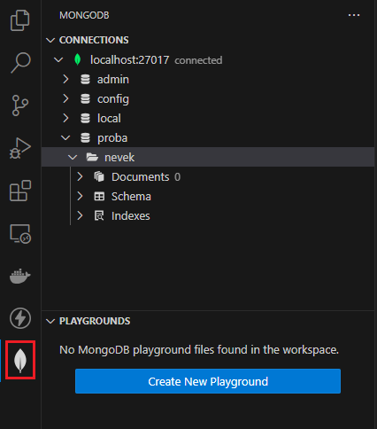
Egy új Terminal-t nyitva adjuk
ki a mongosh utasítást. Ehhez
először állítsuk be a
Környezeti Változók-nál a
következőt a path-nál: